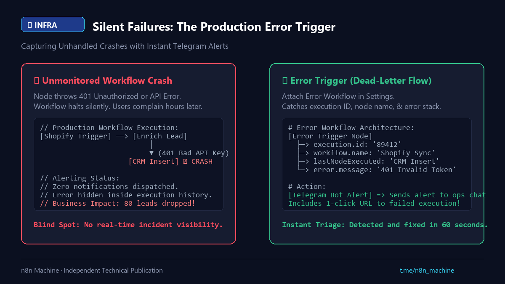

Digest
Silent Failures: The Production Error Trigger
- Published
- Checked against
- docs.n8n.io
- Status
- Corrected, revision 2

Catch silent failures before a user reports them.
01Symptom and cause
- An API token expires or a database drops, and the run stops with no notice.
- Leads or orders are lost for hours.
02Fix
- Build one workflow that starts with Error Trigger.
- In each main workflow set Settings > Error Workflow to it.
- It receives the execution id and URL, workflow name, last node and error message; send them to chat or mail.
Sourcen8n Error Handling Docs